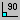
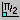

Dans le mémo, on tape soit des commentaires (faire commencer la ligne par ´) soit des définitions de grandeur sous la forme y=f(x) ce qui va créer la grandeur y et la calculer par f(x). Pour créer véritablement il faut appuyer sur le bouton mise à jour  ou sélectionner le menu “ Mise à jour ” (raccourci F2) ou encore frapper la touche Entrée du pavé numérique (la touche Entrée fait passer à la ligne). Le panneau sur le côté affiche les grandeurs disponibles (un clic sur l'une d'elle l'insère dans le mémo). Dans ce même panneau se trouve les différentes fonctions disponibles (l'aide en ligne donne alors la syntaxe ). La grandeur créée peut être une variable (cas général) mais aussi un paramètre calculé (fonction de type moyenne...) ou un paramètre indépendant de la page (constante : par ex g=9.81). Les paramètres expérimentaux dépendant de la page doivent être créés à l'aide du bouton
ou sélectionner le menu “ Mise à jour ” (raccourci F2) ou encore frapper la touche Entrée du pavé numérique (la touche Entrée fait passer à la ligne). Le panneau sur le côté affiche les grandeurs disponibles (un clic sur l'une d'elle l'insère dans le mémo). Dans ce même panneau se trouve les différentes fonctions disponibles (l'aide en ligne donne alors la syntaxe ). La grandeur créée peut être une variable (cas général) mais aussi un paramètre calculé (fonction de type moyenne...) ou un paramètre indépendant de la page (constante : par ex g=9.81). Les paramètres expérimentaux dépendant de la page doivent être créés à l'aide du bouton  .
.
Le nom des grandeurs peut comporter uniquement des lettres ou des chiffres : pas de "prime" (réservé aux équations différentielles) de parenthèse, crochet etc. Dans le nom des grandeurs, on distingue minuscule de majuscule, cela permet d'étudier T(t), MAIS les boites listes de Windows sont incapables de le faire, donc faire attention dans celles-ci.
On peut indiquer l'unité à la suite de l'expression en séparant celle-ci par un blanc souligné _ (touche 8). V2=a*x+b_V crée la grandeur V2 et lui donne le volt comme unité.
Si on crée un fichier par Fichier Nouveau Simulation, le panneau au-dessus du mémo permet de définir la variable de contrôle.
Si le calcul d'une fonction conduit à une erreur (division par zéro ...), la valeur correspondante sera vide (un point singulier permis), s'il y a plus d'une erreur, toutes les valeurs à partir de celle ayant causé la deuxième erreur seront vides.
copie le mémo dans le presse-papiers pour récupération dans un traitement de texte.


permettent de basculer du mode radian vers degré et réciproquement. L'affichage du bouton représente le mode actuellement utilisé.La liste à gauche vous donne les grandeurs définies. Un clic sur une grandeur insère celle-ci dans le texte.
Créé avec HelpNDoc Personal Edition: Générateur d'aide complet